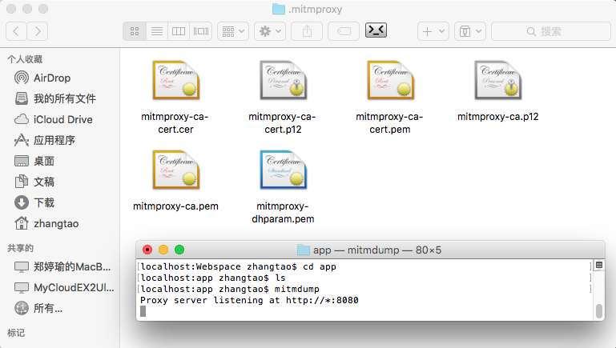
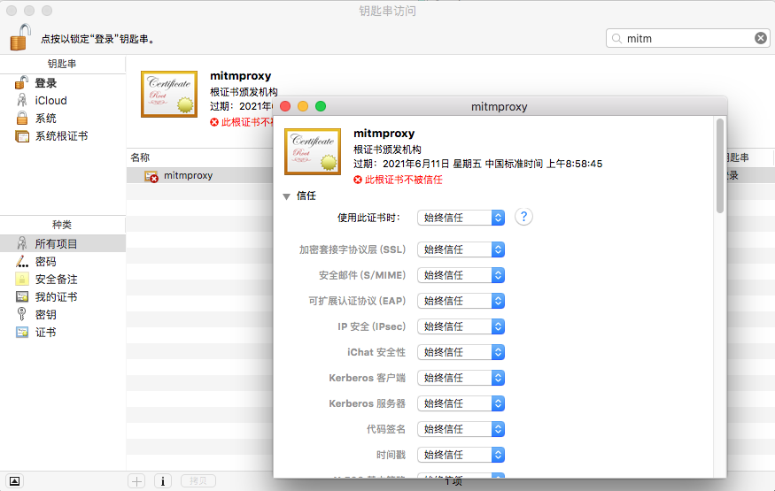
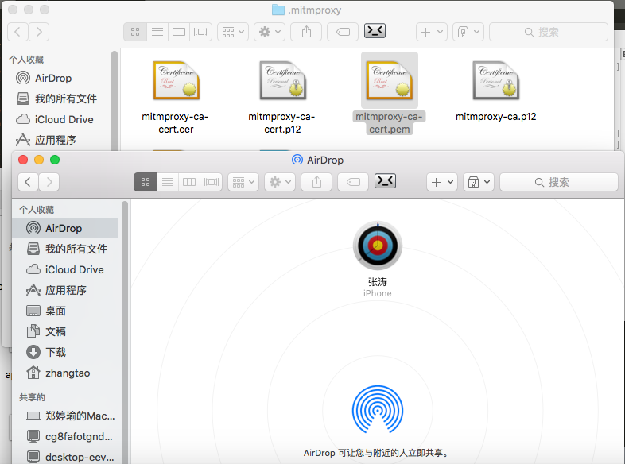
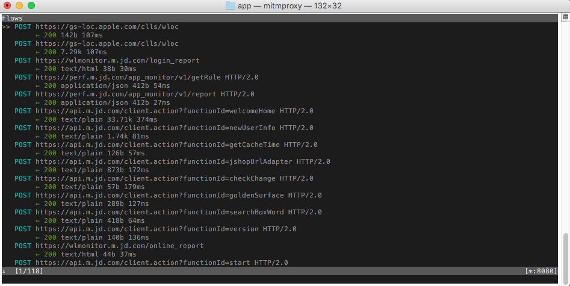

19. mitmproxy的使用
mitmproxy是一个支持HHTP/HTTPS协议的抓包程序，类似Fiddler、Charles的功能，只不过世它通过控制台的形式操作。
mitmproxy还有两个关联组件：
- mitmdump：它是mitmproxy的命令行接口，利用它我们可以对接Python脚本，用Python实现监听后的处理。
- mitmweb： 它是一个Web程序，通过它我们可以清楚观察mimproxy捕获的请求。
mitmproxy的功能：
- 拦截HTTP和HTTPS请求和响应
- 保存HTTP会话请进行分析
- 模拟客户端请求，模拟服务器返回响应
- 利用反向代理将流量转发给指定的服务器
- 支持Mac和Linux上的透明代理
- 利用Python对HTTP请求和响应进行实时处理
19.1 安装和配置：
- 安装：完成mitmproxy的安装，另外还附带安装了mitmdump和mimweb这两个组件
pip3 install mitmproxy
配置手机和PC处于同一局域网下：（具体步骤详见上一节内容）
打开手机的网络配置，并设置使用代理配置，端口监听
8080：（具体步骤详见上一节内容）配置mitmproxy的CA证书。
- 对于mitmproxy来说，如果想要截获HTTPS请求，就需要设置CA证书，而mitmproxy安装后就会提供一套CA证书，只要客户信任了此证书即可。
首先运行启动
mitmdump，就会在此命令下产生CA证书,我们可以从用户目录下的.mitmproxy目录下看到。localhost:app zhangtao$ mitmdump Proxy server listening at http://*:8080
文件说明：
mitmproxy-ca.pemPEM格式的证书私钥mitmproxy-ca-cert.pemPEM格式证书，适用于大多数非Windows平台mitmproxy-ca-cert.p12PKCS12格式的证书，适用于大多数Windows平台mitmproxy-ca-cert.cer与mitmproxy-ca-cert.pem相同（只是后缀名不同），适用于大部分Android平台mitmproxy-dhparam.pemPEM格式的秘钥文件，用于增强SSL安全性。
在Mac系统下双击
mitmproxy-ca-cert.pem即可弹出秘钥串管理页面，找到mitmproxy证书，打开设置选项，选择始终信任即可。
将
mitmproxy-ca-cert.pem文件发送到iPhone手机上，点击安装就可以了（在IOS上通过AirDrop共享过去的）。
在iphone上安装CA证书（Android手机直接复制文件点击安装即可）
在IOS手机上，点击“设置” - > “通用” - > “关于本机” - > “证书信任设置”，设置开启即可
19.2 mitmproxy的使用：
- 运行
mitmproxy命令就会打开一个监听窗口,此窗口就会输出一个App请求中的信息。
localhost:app zhangtao$ mitmproxy

- mitmproxy的按键操作说明
| 按键 | 说明 |
|---|---|
| q | 退出（相当于返回键，可一级一级返回） |
| d | 删除当前（黄色箭头）指向的链接 |
| D | 恢复刚才删除的请求 |
| G | 跳到最新一个请求 |
| g | 跳到第一个请求 |
| C | 清空控制台（C是大写） |
| i | 可输入需要拦截的文件或者域名（逗号需要用\来做转译，栗子：feezu.cn） |
| a | 放行请求 |
| A | 放行所有请求 |
| ? | 查看界面帮助信息 |
| ^ v | 上下箭头移动光标 |
| enter | 查看光标所在列的内容 |
| tab | 分别查看 Request 和 Response 的详细信息 |
| / | 搜索body里的内容 |
| esc | 退出编辑 |
| e | 进入编辑模式 |
19.3 mitmdump的使用：
mitmdump是mitmproxy的命令行接口，同时还可以对接Python对请求进行处理。
使用命令启动mitmproxy，并将截获的数据保存到指定文件中，命令如下：
mitmdump -w outfile
- 使用指定命令截获的数据，如指定处理脚本文件为script.py.
mitmdump -s script.py
- 日志输出：
from mitmproxy import ctx
def request(flow):
# 修改请求头
flow.request.headers['User-Agent'] = 'MitmProxy'
ctx.log.info(str(flow.request.headers))
ctx.log.warn(str(flow.request.headers))
ctx.log.error(str(flow.request.headers))
- Request请求
from mitmproxy import ctx
# 所有的请求都会经过request
def request(flow):
info = ctx.log.info
# info(flow.request.url)
# info(str(flow.request.headers))
# info(str(flow.request.cookies))
# info(flow.request.host)
# info(flow.request.method)
# info(str(flow.request.port))
# info(flow.request.scheme)
print(flow.request.method,":",flow.request.url)
- Response响应
from mitmproxy import ctx
# 所有的请求都会经过request
def response(flow):
info = ctx.log.info
# info(flow.response.url)
# info(str(flow.response.headers))
# info(str(flow.response.cookies))
info(str(flow.response.status_code))
# info(str(flow.response.text))
- 运行手机浏览器访问：
http://httpbin.org/get测试：